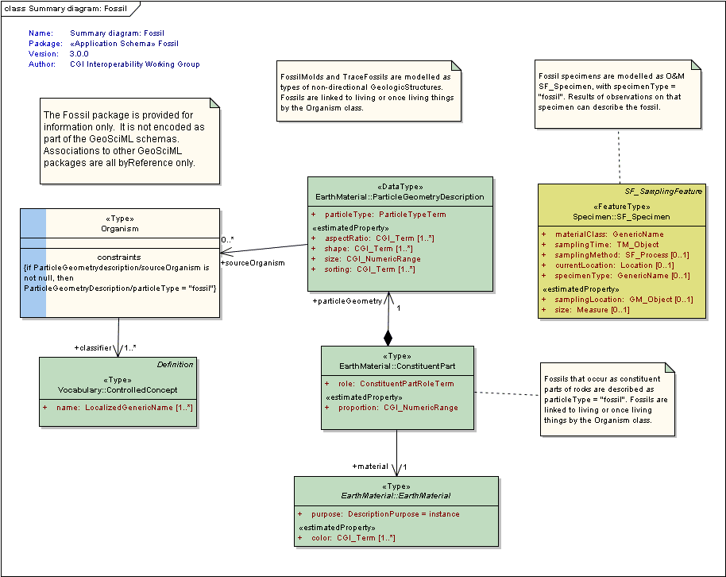

Package GeoSciML/Fossil
The
Fossil package is
provided for information only. It is not encoded as part of the
GeoSciML schemas.
Associations to other GeoSciML packages are all byReference only.
FossilMolds and TraceFossils are modelled as types of non-directional
GeologicStructures. Fossils are linked to living or once living things
by the Organism class.
Fossils that occur as constituent parts of rocks are described as
particleType = "fossil". Fossils are linked (byReference) to living or
once living things by the Organism class.
Fossil specimens are modelled as O&M SF_Specimen, with
specimenType = "fossil". Results of observations on that specimen can
describe the fossil.
Class Summary |
|
| <<Type>> Classes | |
Organism
<<Type>>
|
Broad class to represent any living or once living thing. This is the connection to taxonomy/biology for fossils. |
Tagged Values |
||
| Tag | Value | Notes |
| gmlProfileSchema | #NOTES#Description: URL of the schema location of a GML profile (optional) | Description: URL of the
schema location of a GML profile (optional) |
| owner | IUGS Commission for the Management and Application of Geoscience Information | |
| schemaLocation | http://schemas.geosciml.org/fossil/3.0/fossil.xsd | |
| targetNamespace | http://xmlns.geosciml.org/Fossil/3.0 | Default: FIXME Description: Target XML namespace of the application schema |
| version | 3.0.0 | Default: FIXME Description: Current version of the application schema |
| xmlns | gfos | Default: FIXME Description: Namespace prefix to be used as short form of the target namespace |
| xsdDocument | fossil.xsd | Default: FIXME Description: Name of an XML Schema document to create representing the content of this package |
| xsdEncodingRule | iso19136_2007 | Values: iso19136_2007 |
iso19139_2007 | iso19136_2007_INSPIRE_Extensions Default: iso19136_2007 Description: XML Schema encoding rule to apply |
UML Diagram: Summary diagram: Fossil
